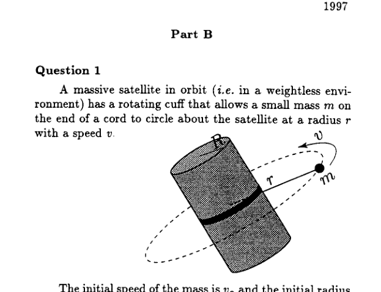

Two astronauts, each of mass 75 kg, are floating next to each other in outer space, outside the space shuttle. One of them pushes the other through a distance of 1 m (an arm’s length) with a force of 300 N. What is the final relative velocity of the two?
- A. 2.0 m/s
- B. 2.83 m/s
- C. 4.0 m/s
- D. 16.0 m/s
Topic: Conservation of Momentum, Newtonian Mechanics Metodi: Conservation of Momentum, Impulse-Momentum Theorem Competenze: Physical Reasoning, Mathematical Modeling Objects: — Fonte: Testo (PDF) — p.1
Due astronauti, di massa di 75 kg ciascuno, galleggiano vicini l’uno all’altro nello spazio esterno, fuori dalla navetta spaziale. Uno di essi spinge l’altro attraverso una distanza di 1 m (lunga di un braccio) con una forza di 300 N. Qual è la velocità relativa finale dei due?
- A. 2.0 m/s
- B. 2.83 m/s
- C. 4.0 m/s
- D. 16.0 m/s
Topic: Conservation of Momentum, Newtonian Mechanics Metodi: Conservation of Momentum, Impulse-Momentum Theorem Competenze: Physical Reasoning, Mathematical Modeling Objects: — Fonte: Testo (PDF) — p.1
Twelve identical resistors (each of resistance ) are placed along the 12 edges of a cube. What is the effective resistance between opposite corners of the cube?
- A.
- B.
- C.
- D.
Topic: Circuits Metodi: Equivalent Circuit Reduction, Symmetry Argument Competenze: Physical Reasoning, Mathematical Modeling Objects: Resistor Fonte: Testo (PDF) — p.1
Dodici resistori identici (ogni resistenza ) sono posizionati lungo i 12 bordi di un cubo. Qual è la resistenza efficace tra gli angoli opposti del cubo?
- A.
- B.
- C.
- D.
Topic: Circuits Metodi: Equivalent Circuit Reduction, Symmetry Argument Competenze: Physical Reasoning, Mathematical Modeling Objects: Resistor Fonte: Testo (PDF) — p.1
A heavy wooden beam of length lies on the ground. You must carry it with your friend who happens to be twice as heavy as you are (and you carry it with the same effort). If you pick up the beam at one end, at what distance from your end should your friend carry it in order to be fair?
- A.
- B.
- C.
- D.
Topic: Rigid Body Statics Metodi: Torque & Angular Momentum Analysis, Free-Body Diagram Competenze: Physical Reasoning, Mathematical Modeling Objects: Beam Fonte: Testo (PDF) — p.1
Un pesante raggio di legno di lunghezza si trova a terra. Devi portarlo con il tuo amico che è doppio di peso di te (e lo porti con lo stesso sforzo). Se prendi il raggio da una estremità, a che distanza dalla tua estremità dovrebbe essere portato dal tuo amico per essere giusto?
- A.
- B.
- C.
- D.
Topic: Rigid Body Statics Metodi: Torque & Angular Momentum Analysis, Free-Body Diagram Competenze: Physical Reasoning, Mathematical Modeling Objects: Beam Fonte: Testo (PDF) — p.1
A car travelling at 80 km/h needs a braking distance of 50 m to come to a complete stop. What braking distance should the same car need if its initial speed were 160 km/h? You may assume that the same braking force can be applied in both cases.
- A. 70.7 m
- B. 100 m
- C. 141 m
- D. 200 m
Topic: Newtonian Mechanics, Conservation of Energy Metodi: Kinematic Equations, Energy Conservation Method Competenze: Physical Reasoning, Mathematical Modeling Objects: — Fonte: Testo (PDF) — p.1
Una macchina che viaggia a 80 km/h ha bisogno di una distanza di frenata di 50 m per fermarsi completamente. Che distanza di frenata dovrebbe avere la stessa auto se la sua velocità iniziale era di 160 km/h? Si può presumere che sia in entrambi i casi che si possa applicare la stessa forza di frenata.
- A. 70.7 m
- B. 100 m
- C. 141 m
- D. 200 m
Topic: Newtonian Mechanics, Conservation of Energy Metodi: Kinematic Equations, Energy Conservation Method Competenze: Physical Reasoning, Mathematical Modeling Objects: — Fonte: Testo (PDF) — p.1
What would the length of the earth’s day be if a pendulum suspended at some point along the equator did not swing (i.e., when it is pulled from its equilibrium point, it does not swing down again)?
- A. 24 hr
- B. 1.2 hr
- C. 1.4 hr
- D. 2.4 hr
Topic: Gravitation, Oscillations & Waves Metodi: Simple Harmonic Motion Analysis, Newton’s Law of Gravitation Competenze: Physical Reasoning, Mathematical Modeling Objects: Pendulum, Planet Fonte: Testo (PDF) — p.1
Qual sarebbe la lunghezza del giorno terrestre se un pendolo sospeso in un certo punto lungo l’equatore non girasse (cioè, quando viene tirato dal suo punto di equilibrio, non girerà di nuovo verso il basso)?
- A. 24 hr
- B. 1.2 hr
- C. 1.4 hr
- D. 2.4 hr
Topic: Gravitation, Oscillations & Waves Metodi: Simple Harmonic Motion Analysis, Newton’s Law of Gravitation Competenze: Physical Reasoning, Mathematical Modeling Objects: Pendulum, Planet Fonte: Testo (PDF) — p.1
Two electrons are a certain distance apart from one another. What is the order of magnitude of the ratio of the electric force between them to the gravitational force between them?
- A.
- B.
- C.
- D.
Topic: Electrostatics, Gravitation Metodi: Coulomb’s Law, Newton’s Law of Gravitation, Order-of-Magnitude Estimation Competenze: Estimation & Approximation, Physical Reasoning Objects: Electron Fonte: Testo (PDF) — p.2
Due elettroni sono una certa distanza l’uno dall’altro. Qual è l’ordine di grandezza del rapporto tra la forza elettrica e la forza gravitazionale?
- A.
- B.
- C.
- D.
Topic: Electrostatics, Gravitation Metodi: Coulomb’s Law, Newton’s Law of Gravitation, Order-of-Magnitude Estimation Competenze: Estimation & Approximation, Physical Reasoning Objects: Electron Fonte: Testo (PDF) — p.2
A balloon is rising vertically with a speed of 3 m/s and releases a sand bag when it is 20 m above the ground. How long after its release does it take for the sand bag to hit the ground? You may ignore air resistance.
- A. 2.01 s
- B. 2.59 s
- C. 2.81 s
- D. 5.0 s
Topic: Newtonian Mechanics Metodi: Kinematic Equations, Free-Body Diagram Competenze: Physical Reasoning, Mathematical Modeling Objects: Projectile Fonte: Testo (PDF) — p.2
Un palloncino si alza verticalmente a una velocità di 3 m/s e rilascia un sacchetto di sabbia quando è a 20 m di altezza. Quanto tempo dopo il rilascio ci vuole per che la sacca di sabbia colpisca il terreno? Potresti ignorare la resistenza dell’aria.
- A. 2.01 s
- B. 2.59 s
- C. 2.81 s
- D. 5.0 s
Topic: Newtonian Mechanics Metodi: Kinematic Equations, Free-Body Diagram Competenze: Physical Reasoning, Mathematical Modeling Objects: Projectile Fonte: Testo (PDF) — p.2
A cord is tied to a pail of water and the pail is swung in a vertical circle of radius 1 m. What must the minimum velocity of the pail be at its highest point so that no water spills out?
- A. 3.1 m/s
- B. 5.6 m/s
- C. 20.7 m/s
- D. 100.5 m/s
Topic: Newtonian Mechanics Metodi: Free-Body Diagram, Kinematic Equations Competenze: Physical Reasoning, Mathematical Modeling Objects: String Fonte: Testo (PDF) — p.2
Un cavo è legato a un barattolo d’acqua e il barattolo è oscillato in un cerchio verticale di raggio di 1 m. Qual è la velocità minima del barattolo al punto più alto, in modo che non si scorra acqua?
- A. 3.1 m/s
- B. 5.6 m/s
- C. 20.7 m/s
- D. 100.5 m/s
Topic: Newtonian Mechanics Metodi: Free-Body Diagram, Kinematic Equations Competenze: Physical Reasoning, Mathematical Modeling Objects: String Fonte: Testo (PDF) — p.2
An object of mass 5 kg hangs from a spring and oscillates with a period of 0.5 s. By how much will the equilibrium length of the spring be shortened when the object is removed?
- A. 0.75 cm
- B. 1.58 cm
- C. 3.13 cm
- D. 6.20 cm
Topic: Oscillations & Waves Metodi: Simple Harmonic Motion Analysis, Hooke’s Law Competenze: Mathematical Modeling, Physical Reasoning Objects: Spring Fonte: Testo (PDF) — p.2
Un oggetto di massa di 5 kg appende da una molla e oscilla con un periodo di 0,5 s. Quanto si accorcerà la lunghezza di equilibrio della primavera quando l’oggetto sarà rimosso?
- A. 0.75 cm
- B. 1.58 cm
- C. 3.13 cm
- D. 6.20 cm
Topic: Oscillations & Waves Metodi: Simple Harmonic Motion Analysis, Hooke’s Law Competenze: Mathematical Modeling, Physical Reasoning Objects: Spring Fonte: Testo (PDF) — p.2
A certain organ pipe produces a sound of frequency 440 Hz in air. If the pipe is filled with helium at the same temperature and pressure, what frequency will be produced? Sound travels three times faster in helium than it does in air.
- A. 147 Hz
- B. 440 Hz
- C. 880 Hz
- D. 1320 Hz
Topic: Oscillations & Waves Metodi: Wave Equation, Physical Modeling Competenze: Physical Reasoning, Mathematical Modeling Objects: Tube Fonte: Testo (PDF) — p.2
Un certo tubo di organo produce un suono di frequenza 440 Hz nell’aria. Se il tubo è riempito di elio alla stessa temperatura e pressione, quale frequenza si produrrà? Il suono viaggia tre volte più velocemente nell’elio di quanto non lo faccia nell’aria.
- A. 147 Hz
- B. 440 Hz
- C. 880 Hz
- D. 1320 Hz
Topic: Oscillations & Waves Metodi: Wave Equation, Physical Modeling Competenze: Physical Reasoning, Mathematical Modeling Objects: Tube Fonte: Testo (PDF) — p.2
A ladder of length 10 m and mass 20 kg (and with a uniform mass distribution) leans against a slippery vertical wall. The ladder makes an angle of 30° with respect to the vertical. Friction between the ladder and the ground prevents it from sliding downwards. What is the magnitude of the force exerted on the ladder by the wall?
- A. 0 N
- B. 0.57 N
- C. 5.7 N
- D. 57 N
Topic: Rigid Body Statics Metodi: Torque & Angular Momentum Analysis, Free-Body Diagram Competenze: Physical Reasoning, Mathematical Modeling Objects: — Fonte: Testo (PDF) — p.2
Una scala di lunghezza di 10 m e di massa di 20 kg (e con una distribuzione uniforme della massa) si appoggia a un muro verticale scivoloso. La scala fa un angolo di 30° rispetto alla verticale. La frizione tra la scala e il terreno impedisce che scivoli verso il basso. Qual è la forza esercitata sulla scala da parte del muro?
- A. 0 N
- B. 0.57 N
- C. 5.7 N
- D. 57 N
Topic: Rigid Body Statics Metodi: Torque & Angular Momentum Analysis, Free-Body Diagram Competenze: Physical Reasoning, Mathematical Modeling Objects: — Fonte: Testo (PDF) — p.2
A ball of mass 1.0 kg is whirled on the end of a string in a horizontal circle of radius 1.5 m and with a constant speed of 2.0 m/s. The work done on the ball by the tension in the string in one complete revolution is,
- A. 0 J
- B. 2.7 J
- C. 8.0 J
- D. 25.1 J
Topic: Newtonian Mechanics, Conservation of Energy Metodi: Conservation of Energy, Free-Body Diagram Competenze: Physical Reasoning, Mathematical Modeling Objects: Ball, String Fonte: Testo (PDF) — p.2
Una palla di massa di 1,0 kg è girata all’estremità di una corda in un cerchio orizzontale di raggio di 1,5 m e con una velocità costante di 2,0 m/s. Il lavoro fatto sulla palla dalla tensione nella corda in una rivoluzione completa è,
- A. 0 J
- B. 2.7 J
- C. 8.0 J
- D. 25.1 J
Topic: Newtonian Mechanics, Conservation of Energy Metodi: Conservation of Energy, Free-Body Diagram Competenze: Physical Reasoning, Mathematical Modeling Objects: Ball, String Fonte: Testo (PDF) — p.2
A source of sound emitting a note of constant frequency moves in a horizontal circle at constant speed. A distant observer hears a note which fluctuates in pitch over a range of 20 Hz once every second. If the rate of rotation of the source is doubled, the observer would hear a fluctuation in pitch,
- A. greater than 20 Hz once every second.
- B. of 20 Hz twice every second.
- C. less than 20 Hz once every two seconds.
- D. greater than 20 Hz twice every second.
Topic: Oscillations & Waves Metodi: Wave Equation, Physical Modeling Competenze: Physical Reasoning, Mathematical Modeling Objects: — Fonte: Testo (PDF) — p.2
Una fonte di suono che emette una nota di frequenza costante si muove in un cerchio orizzontale a velocità costante. Un osservatore lontano sente una nota che oscilla in tono su un intervallo di 20 Hz una volta ogni secondo. Se il tasso di rotazione della fonte è raddoppiato, l’osservatore sentirà una fluttuazione del tono,
- A. superiore a 20 Hz una volta ogni secondo.
- B. di 20 Hz due volte al secondo.
- C. inferiore a 20 Hz una volta ogni due secondi.
- D. superiore a 20 Hz due volte al secondo.
Topic: Oscillations & Waves Metodi: Wave Equation, Physical Modeling Competenze: Physical Reasoning, Mathematical Modeling Objects: — Fonte: Testo (PDF) — p.2
Four identical charges are located at the corners of a square. The electric field is zero at,
- A. any of the four corners of the square.
- B. any of the mid-points of the sides of the square.
- C. the centre point of the square.
- D. at no point within or on the square.
Topic: Electrostatics Metodi: Superposition Principle, Symmetry Argument Competenze: Physical Reasoning, Diagrammatic Reasoning Objects: Point Charge Fonte: Testo (PDF) — p.2
Quattro cariche identiche sono situate negli angoli di un quadrato. Il campo elettrico è a zero,
- A. uno qualsiasi dei quattro angoli del quadrato.
- B. qualsiasi punto medio dei lati del quadrato.
- C. il punto centrale del quadrato.
- D. in nessun punto all’interno o sul quadrato.
Topic: Electrostatics Metodi: Superposition Principle, Symmetry Argument Competenze: Physical Reasoning, Diagrammatic Reasoning Objects: Point Charge Fonte: Testo (PDF) — p.2
The unit of electric charge may be expressed as,
- A. ampere-newton-meter / watt
- B. ampere-volt
- C. ampere / second
- D. ampere-ohm
Topic: Electrostatics Metodi: Dimensional Analysis, Physical Modeling Competenze: Unit Conversion, Physical Reasoning Objects: — Fonte: Testo (PDF) — p.3
L’unità di carica elettrica può essere espressa come:
- A. ampere-newtons-metro / watt
- B. ampere-volt
- C. ampere / secondo
- D. ampere-ohm
Topic: Electrostatics Metodi: Dimensional Analysis, Physical Modeling Competenze: Unit Conversion, Physical Reasoning Objects: — Fonte: Testo (PDF) — p.3
A rectangular coil of wire rotates about an axis which is perpendicular to a uniform magnetic field at a steady rate. Consider the instant when the plane of the coil is parallel to the magnetic field lines. At that instant the induced electromotive force is,
- A. minimum.
- B. maximum.
- C. zero.
- D. constant, the same at all times.
Topic: Electromagnetic Induction Metodi: Faraday’s Law of Induction, Physical Modeling Competenze: Physical Reasoning, Mathematical Modeling Objects: Coil Fonte: Testo (PDF) — p.3
Una bobina rettangolare di filo ruota intorno ad un asse perpendicolare a un campo magnetico uniforme a velocità costante. Considerate l’istante in cui il piano della bobina è parallelo alle linee del campo magnetico. In quel momento la forza elettromotrice indotta è,
- **A ** minimo.
- massimo B..
- C. zero.
- costante D., sempre uguale.
Topic: Electromagnetic Induction Metodi: Faraday’s Law of Induction, Physical Modeling Competenze: Physical Reasoning, Mathematical Modeling Objects: Coil Fonte: Testo (PDF) — p.3
An airplane flies from a town to a town when there is no wind and takes a time for a return trip. When there is a wind blowing in a direction from town to town , the plane’s time for a similar return trip, , would satisfy,
- A.
- B.
- C.
- D. the result depends on the distance between the towns.
Topic: Newtonian Mechanics Metodi: Kinematic Equations, Vector Decomposition Competenze: Physical Reasoning, Mathematical Modeling Objects: — Fonte: Testo (PDF) — p.3
Un aereo vola da una città a una città quando non c’è vento e richiede un tempo per un viaggio di ritorno. Quando il vento soffia in direzione da città a città , il tempo dell’aereo per un simile viaggio di ritorno, , soddisfa:
- A.
- B.
- C.
- D. il risultato dipende dalla distanza tra le città.
Topic: Newtonian Mechanics Metodi: Kinematic Equations, Vector Decomposition Competenze: Physical Reasoning, Mathematical Modeling Objects: — Fonte: Testo (PDF) — p.3
You have an ample supply of capacitors. What is the minimum number of these capacitors required to make a circuit with an equivalent capacitance of ?
- A. 3
- B. 4
- C. 5
- D. 6
Topic: Circuits Metodi: Equivalent Circuit Reduction, Physical Modeling Competenze: Physical Reasoning, Mathematical Modeling Objects: Capacitor Fonte: Testo (PDF) — p.3
Avete un’ampia fornitura di condensatori . Qual è il numero minimo di questi condensatori richiesto per realizzare un circuito con una capacità equivalente di ?
- A. 3
- B. 4
- C. 5
- D. 6
Topic: Circuits Metodi: Equivalent Circuit Reduction, Physical Modeling Competenze: Physical Reasoning, Mathematical Modeling Objects: Capacitor Fonte: Testo (PDF) — p.3
Three 100 W light bulbs are connected in series to a 120 V power source. If two of the light bulbs are replaced by 60 W bulbs, the brightness of the remaining 100 W bulb is,
- A. brighter than it was before.
- B. dimmer than it was before.
- C. the same brightness as it was before.
- D. will not illuminate.
Topic: Circuits Metodi: Kirchhoff’s Laws, Equivalent Circuit Reduction Competenze: Physical Reasoning, Mathematical Modeling Objects: Resistor Fonte: Testo (PDF) — p.3
Tre lampadine da 100 W sono collegate in serie a una fonte di alimentazione da 120 V. Se due delle lampadine vengono sostituite da lampadine da 60 W, la luminosità della lampadina restante da 100 W è:
- A. più luminosa di prima.
- B. più sottile di prima.
- C. la stessa luminosità di prima.
- D. non si illuminerà.
Topic: Circuits Metodi: Kirchhoff’s Laws, Equivalent Circuit Reduction Competenze: Physical Reasoning, Mathematical Modeling Objects: Resistor Fonte: Testo (PDF) — p.3
The earth orbits the sun in an elliptical path. Of the following statements, which are true?
I The earth’s orbital speed is constant. II The angular momentum of the earth with respect to the sun is a constant. III The force acting on the earth due to the sun is a constant. IV The earth’s orbital speed is faster in the spring and fall than it is in the summer and winter.
- A. I only.
- B. II only.
- C. IV only.
- D. II and IV only.
Topic: Gravitation, Conservation of Momentum Metodi: Kepler’s Laws, Conservation Laws Competenze: Physical Reasoning, Mathematical Modeling Objects: Planet, Star Fonte: Testo (PDF) — p.3
La Terra orbita intorno al Sole in un percorso ellittico. Quali delle seguenti affermazioni sono vere?
La velocità orbitale della Terra è costante. II Il momento angolare della terra rispetto al sole è costante. III La forza che agisce sulla terra a causa del sole è costante. IV La velocità orbitale della Terra è più veloce in primavera e autunno che in estate e inverno.
- **A ** Solo io.
- solo B. II.
- solo C. IV.
- solo D. II e IV.
Topic: Gravitation, Conservation of Momentum Metodi: Kepler’s Laws, Conservation Laws Competenze: Physical Reasoning, Mathematical Modeling Objects: Planet, Star Fonte: Testo (PDF) — p.3
A ball is thrown upwards into the air. Taking into account air resistance, the forces acting on the ball while in upward flight are,
- A. a decreasing upwards force and a constant downwards force.
- B. a decreasing upwards force and a decreasing downwards force.
- C. a decreasing downwards force.
- D. an increasing downwards force.
Topic: Newtonian Mechanics Metodi: Free-Body Diagram, Physical Modeling Competenze: Physical Reasoning, Diagrammatic Reasoning Objects: Ball Fonte: Testo (PDF) — p.3
Una palla viene lanciata in aria. Tenendo conto della resistenza dell’aria, le forze che agiscono sulla palla mentre in volo verso l’alto sono:
- A. una forza ascendente in diminuzione e una forza in discesa costante.
- B. una forza ascendente in calo e una forza in calo.
- C. una forza in diminuzione verso il basso.
- D. una forza in calo in aumento.
Topic: Newtonian Mechanics Metodi: Free-Body Diagram, Physical Modeling Competenze: Physical Reasoning, Diagrammatic Reasoning Objects: Ball Fonte: Testo (PDF) — p.3
A bullet travelling at 500 m/s and with a mass of 100 g collides and remains embedded in a small lead weight of mass 5 kg. The weight is suspended from a fixed support by a cord of length 5 m and may swing freely. If the weight is initially at rest, what is the period of oscillation of the system immediately after the collision and how does it change as the amplitude of the oscillation decays due to air resistance?
- A. 4.5 s and constant in time.
- B. 4.5 s and increasing in time.
- C. 0.7 s and constant in time.
- D. none of the above.
Topic: Oscillations & Waves, Conservation of Momentum Metodi: Conservation of Momentum, Simple Harmonic Motion Analysis Competenze: Physical Reasoning, Mathematical Modeling Objects: Pendulum, Projectile, String Fonte: Testo (PDF) — p.3
Un proiettile che viaggia a 500 m/s e ha una massa di 100 g si schianta e rimane incastrato in un piccolo peso di piombo di massa di 5 kg. Il peso è sospeso da un supporto fisso con un cordone di lunghezza di 5 m e può oscillare liberamente. Se il peso è inizialmente a riposo, qual è il periodo di oscillazione del sistema immediatamente dopo la collisione e come cambia a decadere l’ampiezza dell’oscillazione a causa della resistenza all’aria?
- A. 4,5 s e costante nel tempo.
- B. 4,5 s e aumentando nel tempo.
- C. 0,7 s e costante nel tempo.
- D. nessuna delle seguenti.
Topic: Oscillations & Waves, Conservation of Momentum Metodi: Conservation of Momentum, Simple Harmonic Motion Analysis Competenze: Physical Reasoning, Mathematical Modeling Objects: Pendulum, Projectile, String Fonte: Testo (PDF) — p.3
A peculiar force acting upon an object has the equation where is the displacement of the object from some origin and . What is the magnitude of the work done by this force on the object as the object moves from to ?
- A.
- B.
- C.
- D.
Topic: Newtonian Mechanics, Conservation of Energy Metodi: Calculus-Integration, Energy Conservation Method Competenze: Mathematical Modeling, Physical Reasoning Objects: — Fonte: Testo (PDF) — p.3
Una forza particolare che agisce su un oggetto ha l’equazione dove è lo spostamento dell’oggetto da qualche origine e . Qual è la grandezza del lavoro svolto da questa forza sull’oggetto mentre l’oggetto passa da a ?
- A.
- B.
- C.
- D.
Topic: Newtonian Mechanics, Conservation of Energy Metodi: Calculus-Integration, Energy Conservation Method Competenze: Mathematical Modeling, Physical Reasoning Objects: — Fonte: Testo (PDF) — p.3
With what minimum speed, with respect to the earth, must an object be launched from the earth so as to escape the gravitational pull of the solar system? You may ignore the effect of the earth, moon and other planets.
- A. m/s
- B. m/s
- C. m/s
- D. m/s
Topic: Gravitation, Conservation of Energy Metodi: Energy Conservation Method, Newton’s Law of Gravitation Competenze: Physical Reasoning, Mathematical Modeling Objects: Planet, Star Fonte: Testo (PDF) — p.4
Con quale velocità minima, rispetto alla terra, deve essere lanciato un oggetto dalla terra per sfuggire alla forza gravitazionale del sistema solare? Potresti ignorare l’effetto della terra, della luna e di altri pianeti.
- A. m/s
- B. m/s
- C. m/s
- D. m/s
Topic: Gravitation, Conservation of Energy Metodi: Energy Conservation Method, Newton’s Law of Gravitation Competenze: Physical Reasoning, Mathematical Modeling Objects: Planet, Star Fonte: Testo (PDF) — p.4
Sound waves from deep inside a room have a frequency of 440 Hz. An observer is far from the window (at least much farther from the window than the window is wide). The line from the observer to the window makes an angle of 30° with respect to the normal to the plane of the window. Shutters begin to close so that the width of the window is decreasing at 6 m/s. The observer hears,
- A. a 440 Hz note beating at 4.29 Hz.
- B. a 440 Hz note beating at 3.88 Hz.
- C. a 440 Hz note with a steadily increasing intensity.
- D. initially a 440 Hz note with a steadily increasing frequency.
Topic: Oscillations & Waves, Wave Optics Metodi: Superposition Principle, Wave Equation Competenze: Physical Reasoning, Mathematical Modeling Objects: — Fonte: Testo (PDF) — p.4
Le onde sonore provenienti dal profondo di una stanza hanno una frequenza di 440 Hz. Un osservatore è lontano dalla finestra (almeno molto più lontano dalla finestra che la finestra è larga). La linea dall’osservatore alla finestra fa un angolo di 30° rispetto al normale al piano della finestra. Le chiusure iniziano a chiudere in modo che la larghezza della finestra diminuisca a 6 m/s. L’osservatore sente,
- A. una nota 440 Hz battendo a 4,29 Hz.
- ** B.** una nota 440 Hz battendo a 3,88 Hz.
- C. una nota di 440 Hz con intensità costantemente in aumento.
- D. inizialmente una nota di 440 Hz con una frequenza costantemente crescente.
Topic: Oscillations & Waves, Wave Optics Metodi: Superposition Principle, Wave Equation Competenze: Physical Reasoning, Mathematical Modeling Objects: — Fonte: Testo (PDF) — p.4
A massive satellite in orbit (i.e. in a weightless environment) has a rotating cuff that allows a small mass on the end of a cord to circle about the satellite at a radius with a speed .
The initial speed of the mass is and the initial radius of the circular path is . A mechanism within the satellite allows the cord to be drawn in so that the radius of revolution for the mass decreases. The centre of revolution for the mass remains constant and you may assume that the satellite is much, much more massive than .
(a) Find the initial tension in the string.
(b) Suppose that the cord begins to be drawn in at a constant rate (i.e. decreases uniformly from its initial value ). Express the speed of the mass as a function of , , and of its initial speed .
(c) If the cord snaps beyond a maximum tension and the radius of the satellite is , what constraint must be satisfied in order for the mass to be brought within the satellite?
(d) What amount of work is necessary to bring the mass from radius to radius ?

Satellite with rotating cuff and orbiting mass mTopic: Newtonian Mechanics, Conservation of Momentum Metodi: Conservation of Momentum, Free-Body Diagram, Torque & Angular Momentum Analysis Competenze: Mathematical Modeling, Physical Reasoning Objects: Satellite, String Fonte: Testo (PDF) — p.4
Un satellite massiccio in orbita (cioè in un ambiente senza peso) ha un manzo rotante che consente a una piccola massa sulla fine di un cavo di girare intorno al satellite a un raggio con una velocità .
La velocità iniziale della massa è e il raggio iniziale del percorso circolare è . Un meccanismo all’interno del satellite consente di attirare il cavo in modo che il raggio di rivoluzione della massa diminuisca. Il centro di rivoluzione della massa rimane costante e si può supporre che il satellite sia molto, molto più massiccio di .
(a) Trova la tensione iniziale nella corda.
b) Supponiamo che il cavo comincia a essere attirato a velocità costante (cioè diminuisce uniformemente dal suo valore iniziale ). Esprimere la velocità della massa come funzione di , e della sua velocità iniziale .
c) Se il cavo si spalanca oltre una tensione massima e il raggio del satellite è , quale limitazione deve essere soddisfatta per poter portare la massa all’interno del satellite?
d) Quanti lavori sono necessari per portare la massa dal raggio al raggio ?
Satellite con manette rotanti e massa in orbita m
Topic: Newtonian Mechanics, Conservation of Momentum Metodi: Conservation of Momentum, Free-Body Diagram, Torque & Angular Momentum Analysis Competenze: Mathematical Modeling, Physical Reasoning Objects: Satellite, String Fonte: Testo (PDF) — p.4
A solid metal sphere of radius 2 cm carries a net negative charge . The air around the sphere will hence be subjected to an electric field. If an electric field in excess of V/m is applied across an “air molecule”, the molecule will ionize. This will appear as sparking and is called “break down”. You may assume spherical symmetry in this problem (although in actuality, sparking will break this symmetry).
(a) Sketch the electric field lines within and around the charged sphere and show on your diagram how the excess charge on the sphere is distributed.
(b) What is the minimum charge that the sphere must have to cause the break down of air near its surface?
(c) It requires about J of energy to ionize an air molecule. Consider a free electron near the surface of the sphere carrying this minimum charge as in part (b). What initial distance must the electron travel before attaining a kinetic energy equal to the ionization energy for an air molecule? An electron typically travels only m before colliding with an air molecule. Is it possible for our accelerated electron to cause ionization of air molecules away from the surface of the sphere?
(d) What is the potential (in units of V) on the surface of the sphere when break down just occurs?
Topic: Electrostatics Metodi: Gauss’s Law, Electric Potential Method, Coulomb’s Law Competenze: Mathematical Modeling, Diagrammatic Reasoning Objects: Conducting Sphere, Electron Fonte: Testo (PDF) — p.4
Una sfera metallica solida di raggio di 2 cm ha una carica netta negativa . L’aria intorno alla sfera sarà quindi sottoposta a un campo elettrico. Se un campo elettrico superiore a V/m viene applicato su una “molecola d’aria”, la molecola si ionizza. Questo apparirà come una scintilla e si chiama “rompi”. Potete assumere una simmetria sferica in questo problema (anche se in realtà, lo scatto spezzerà questa simmetria).
(a) Segnare le linee di campo elettrico all’interno e intorno alla sfera carica e mostrare sul diagramma come la carica in eccesso sulla sfera è distribuita.
b) Qual è la carica minima che la sfera deve avere per causare la rottura dell’aria vicino alla sua superficie?
(c) richiede circa J di energia per ionizzare una molecola d’aria. Considera un elettrone libero vicino alla superficie della sfera che porta questa carica minima come nella parte (b). Quale distanza iniziale deve percorrere l’elettrone prima di raggiungere un’energia cinetica uguale all’energia di ionizzazione per una molecola d’aria? Un elettrone viaggia tipicamente solo m prima di collidere con una molecola d’aria. E’ possibile che il nostro elettrone accelerato provochi l’ionizzazione di molecole d’aria lontano dalla superficie della sfera?
d) Qual è il potenziale (in unità di V) sulla superficie della sfera quando si verifica la rottura?
Topic: Electrostatics Metodi: Gauss’s Law, Electric Potential Method, Coulomb’s Law Competenze: Mathematical Modeling, Diagrammatic Reasoning Objects: Conducting Sphere, Electron Fonte: Testo (PDF) — p.4
A spherical balloon of radius cm has within it a small, solid lead sphere of mass and radius . The mass of the balloon is negligible as compared to the mass of the lead sphere. The system is buoyantly neutral, floating just below the surface in a pool of water.
The balloon is given a light downwards push. Describe the motion of the system qualitatively, and as quantitatively as possible.
Hint: A spherical object of radius moving without turbulence and with a velocity through a fluid of viscosity experiences a retarding force given by,
Water has a viscosity of Pa·s and a density of kg/m³. Lead has a density of kg/m³.
Topic: Fluid Mechanics, Oscillations & Waves Metodi: Hydrostatic Equilibrium, Differential Equations, Physical Modeling Competenze: Mathematical Modeling, Physical Reasoning Objects: Sphere Fonte: Testo (PDF) — p.5
Un palloncino sferico di raggio cm ha all’interno una piccola sfera di piombo solida di massa e raggio . La massa del palloncino è trascurabile rispetto alla massa della sfera di piombo. Il sistema è neutrale e galleggia appena sotto la superficie in una piscina d’acqua.
Il pallone riceve una leggera spinta verso il basso. Descrivere il movimento del sistema in modo qualitativo e quantitativo.
Signal: Un oggetto sferico di raggio che si muove senza turbolenza e con una velocità attraverso un fluido di viscosità prova una forza ritardante data da:
L’acqua ha una viscosità di Pa·s e una densità di kg/m3. Il piombo ha una densità di kg/m3.
Topic: Fluid Mechanics, Oscillations & Waves Metodi: Hydrostatic Equilibrium, Differential Equations, Physical Modeling Competenze: Mathematical Modeling, Physical Reasoning Objects: Sphere Fonte: Testo (PDF) — p.5